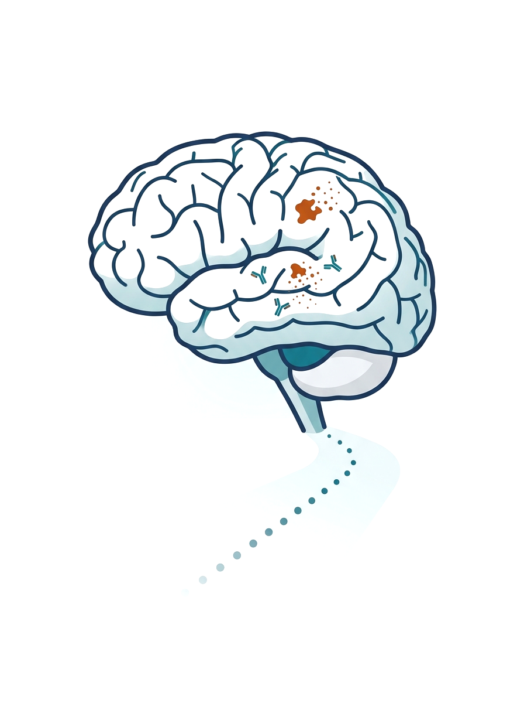
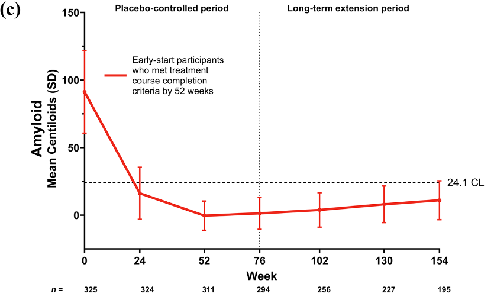
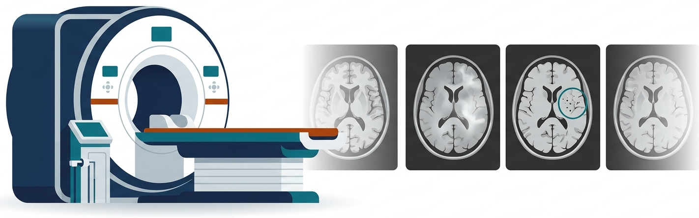
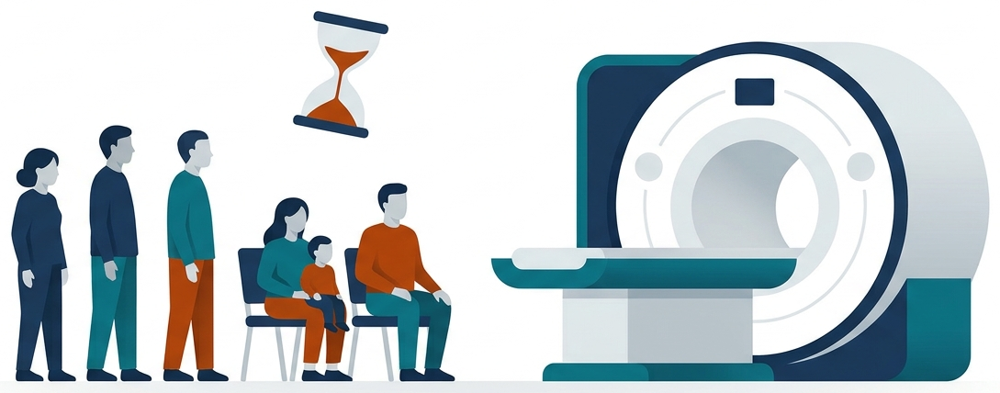
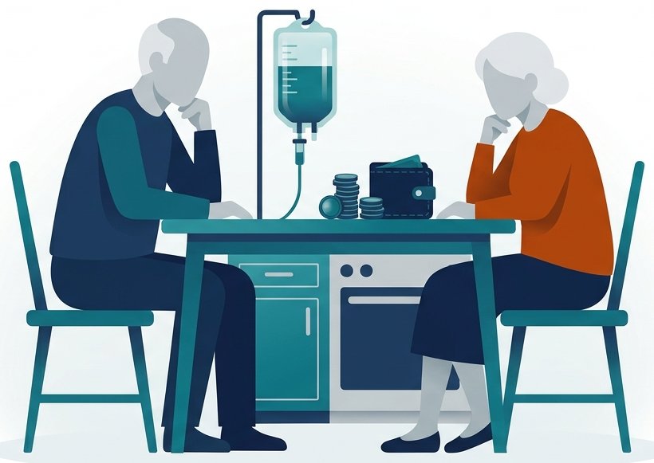

打完 18 個月
之後
Lecanemab 與 Donanemab 的
長期追蹤、真實世界資料與照護實務
陳培豪 醫師
馬偕紀念醫院 神經科暨失智防治中心
資料更新至 2026 年 10 月
各位神經科的同仁大家好，我是馬偕紀念醫院失智防治中心的陳培豪。
今天不再重談十八個月的樞紐試驗，而是談十八個月之後：延伸期資料、真實世界世代，以及門診要怎麼追蹤、怎麼治療、怎麼照護。
接下來大約三十分鐘，分成長期療效、真實世界、如何追蹤、如何治療，以及照護系統五個部分。
打完 18 個月之後，門診最常被問的三件事
點選卡片，看今天每個問題的重點答案
答案出處分別見第 7–10、18–22、27–28 頁
打完十八個月之後，門診最常被問的有三件事。
第一，要繼續打嗎？要打多久？lecanemab 是持續型，donanemab 是限期型。
第二，MRI 要照多久、出現 ARIA 怎麼辦？大部分 ARIA 出現在前六個月，但停藥後仍可能進展。
第三，病人需要抗凝或發生中風時怎麼辦？這三個問題，今天都會回答。
請先記住這三個問題，講到對應的段落，我會再回來回答。
三年內，給藥方式與監測規則已改了好幾次
美國仿單與台灣臨床實務並不同步；本講以 2026 年版仿單為準，並標出台灣共識的差異
DailyMed LEQEMBI SPL v4–v24、KISUNLA SPL v8｜Eisai／Lilly 新聞稿｜Alzforum 2025-09、2026-07｜台灣共識 Formosan J Stroke 2025;7(2):83–98｜科技新報 2025-07-31
先快速看這三年的變化。
二零二三年 lecanemab 在美國核准，二零二四年七月 donanemab 核准。
這兩支藥的核准，都是根據十八個月的樞紐試驗。
二零二五年台灣核准兩支藥，六月腦中風學會和臨床失智症學會發表共識；美國則陸續加入每四週維持、改良滴定，以及提早到第一個月的 MRI。
也就是說，同一個病人，打藥的方式和 MRI 的時間點，在這三年內可能已經改了兩三次。
二零二六年七月，lecanemab 皮下起始也獲准，美國已經可以全程居家注射；台灣目前還沒有引進皮下劑型。
所以今天的建議，都以二零二六年的仿單為準，再標出台灣共識不同的地方。
兩支抗體打的是類澱粉聚集的不同階段
兩者都是 IgG1，靠 Fc 端招募微膠細胞清除斑塊
Nakashima S, et al. Annu Rev Pathol 2026（Figure 1）. PMID 42887030｜van Dyck 2023 NEJM. PMID 36449413｜Rabinovici 2025 Donanemab AUR. PMID 40155270
兩支抗體打的是類澱粉聚集的不同階段。
lecanemab 以高親和力結合可溶性的原纖維。
donanemab 只認斑塊裡、N 端被修飾的焦麩胺酸 Aβ，所以斑塊清完，標的就少了，這是它可以清除後停藥的生物學理由。
兩者都是 IgG1，靠 Fc 端招募微膠細胞把斑塊吞噬清除；Clarity 十八個月，類澱粉 PET 下降五十九點一 Centiloid。
這個標的差異，正好對應到後面要講的用法：一個持續打，一個清完就停。
ARIA 從哪裡來：抗體與血管壁類澱粉的發炎反應
ARIA 與 CAA 相關發炎（CAAri）的影像表現非常相似
血管壁本來就有類澱粉
腦類澱粉血管病變（CAA）；ApoE ε4 帶因者血管類澱粉較多
抗體先結合血管壁類澱粉
招募補體 C1q；清除斑塊時類澱粉被搬到血管壁，加重 CAA
發炎、血管通透性上升
液體滲出 → ARIA-E：腦實質水腫、腦溝積液（FLAIR）
血管壁脆弱、紅血球外滲
ARIA-H：微出血、表淺鐵沉積（GRE／SWI）；少數巨出血
台灣共識 Formosan J Stroke 2025;7(2):83–98 §3.2｜Nakashima 2026 Annu Rev Pathol. PMID 42887030｜補體 C1q：AD/PD 2026 會議資料（Lemere，小鼠）｜CTAD 2025 會議資料（aducanumab 解剖）
ARIA 從哪裡來？
血管壁上本來就有類澱粉，也就是腦類澱粉血管病變，ApoE ε4 帶因者特別多。
ε4 帶因者的 ARIA 風險比較高，和血管壁上的類澱粉比較多有關。
抗體先結合血管壁上的類澱粉、招募補體；清除斑塊時，類澱粉還會被搬到血管壁上。
發炎讓血管通透性上升，液體滲出，就是 ARIA-E。
血管壁變脆、紅血球外滲，就是 ARIA-H。所以 CAA 的影像標記，正是 ARIA 的危險因子。
記住這個機轉，後面風險分層講到微出血、表淺鐵沉積和白質病變，道理都一樣。
先記住 18 個月的基準：差異約 0.45–0.7 分 CDR-SB
兩個樞紐試驗的主要結果與安全性；後面的延伸期與真實世界都拿這兩個數字比較
Clarity AD（lecanemab）n＝1,795
CDR-SB 差異
−0.45
95% CI −0.67 至 −0.23；安慰劑 1.66 分
ARIA-E
12.6%
有症狀 2.8%
輸注反應
26.4%
其他
類澱粉 −59.1 CL；CDR-G 惡化 HR 0.69（探索性）
TRAILBLAZER-ALZ 2（donanemab）n＝1,736
CDR-SB 差異
−0.70
95% CI −0.95 至 −0.45；安慰劑 2.42 分（整體族群）
ARIA-E
24.0%
有症狀 6.1%
輸注反應
8.7%
其他
治療相關死亡 3 例 vs 安慰劑 1 例
van Dyck CH, et al. N Engl J Med 2023. PMID 36449413｜Sims JR, et al. JAMA 2023. PMID 37459141｜Donanemab 有症狀 ARIA-E 52/853：台灣共識 2025 表列 6.1%
先記住十八個月的基準。
CDR-SB 是臨床失智評分六個項目的總和，滿分十八分，分數越高越嚴重。
Clarity AD：CDR-SB 差零點四五分，ARIA-E 百分之十二點六，輸注反應百分之二十六點四。
lecanemab 的安慰劑組，十八個月惡化一點六六分。
TRAILBLAZER-ALZ 2：差零點七零分，ARIA-E 百分之二十四，有症狀的百分之六點一。
donanemab 的安慰劑組，十八個月惡化二點四二分。
換算成安慰劑組的惡化量，大約減緩百分之二十七和百分之二十九。後面的延伸期和真實世界，都拿這兩個數字來比。
這兩個數字看起來不大，但它們是後面所有延伸期與真實世界資料的比較基準。
Lecanemab 4 年：與 ADNI 的差距從 0.52 擴大到 1.75 分
Clarity AD 延伸期持續治療者，與外部自然病程世代比較（未經隨機分派）
CDR-SB 差距（分；正值＝治療組惡化較少）
惡化到下一分期的風險（vs ADNI）
3 年 −30% → 4 年 −34%
低 tau 亞組（SUVR <1.06）4 年未退步；56% 較基線改善，人數僅數十人
治療組 859 → 478 人
ADNI 對照 436 → 98（流失 78%）
van Dyck CH, et al. Alzheimers Dement 2025. PMID 41355080（36 個月）｜4 年數據：AAIC 2025 會議資料、Eisai 新聞稿 2025-07-31、Alzforum 2025-08-07
先看 lecanemab 的延伸期。這是 Clarity AD 持續治療者和外部自然病程世代的比較，沒有隨機分派。
和 ADNI 相比，CDR-SB 差距從十八個月的零點五二、三十六個月的一點零一，到四年擴大為一點七五分；和 BioFINDER 比，差距更大。
惡化到下一個臨床分期的風險，三年降低百分之三十，四年百分之三十四。
風險降低百分之三十四，代表四年之內，比較少人從 MCI 進展到失智，或從輕度進展到中度。
低 tau 亞組四年仍有百分之六十九沒有退步，不過人數只有數十人。
低 tau 亞組中，百分之五十六甚至比基線還進步。
最後一定要看流失：治療組從八百五十九人剩四百七十八人，ADNI 對照從四百三十六人只剩九十八人。四年的數字是 AAIC 2025 的會議資料。
所以這張圖要這樣看：方向是一致的，但越往後，比較的人越少，誤差也越大。
Donanemab 3 年：限期給藥後，差距仍持續拉開
TRAILBLAZER-ALZ 2 延伸期；達清除標準者改打安慰劑，延遲起始組於延伸期才開始用藥
早期起始組 vs 加權 ADNI 的 CDR-SB 差距（負值＝惡化較少）
| 人數 | 基線 | 6 | 12 | 18 | 24 | 36 月 |
|---|---|---|---|---|---|---|
| 早期起始組 | 794 | 731 | 650 | 604 | 507 | 417 |
| ADNI（ESS） | 268 | 255 | 237 | 200 | 183 | 122 |
CDR-G 惡化到下一分期
早期 vs 延遲起始，3 年，p<0.001
用藥 76 週達清除（<24.1 CL）；延遲起始組於延伸期 76.5%
52 週內完成療程者，3 年差距（95% CI −1.9 至 −0.7）
Zimmer JA, et al. J Prev Alzheimers Dis 2026;13:100446（Fig 2a、Fig 3、Fig 4b）. PMID 41330788｜ESS：加權後有效樣本數
donanemab 的延伸期，是達到清除標準的人改打安慰劑，延遲起始組在延伸期才開始用藥。
和加權的 ADNI 相比，CDR-SB 差距從六個月的零點二，擴大到三十六個月的一點二分。
早期起始對延遲起始，惡化到下一分期的風險比是零點七三。
風險比零點七三，大約是惡化到下一分期的風險降低四分之一。
用藥七十六週時，百分之七十六點四達到清除；五十二週內就完成療程的人，三年效益相近。
延遲起始組在延伸期開始用藥後，也有百分之七十六點五達到清除。
同樣要看人數：早期起始組三十六個月只剩四百一十七人，大約一半。
換句話說，限期給藥之後效益沒有消失，但三年後還能比較的人只剩一半左右。
Donanemab 停藥後，類澱粉以每年約 2.4 CL 的速度回升
52 週即達清除標準而停藥者（n＝325），追蹤到第 154 週

原文 Fig 4c：52 週完成療程者的平均 Centiloid（虛線＝24.1 CL；點圖放大）
中位再累積速率（模型推估），與未治療者的自然累積相當
第 154 週仍 <24.1 CL；平均 10.99 CL會議
延伸期第 76 週血漿 p-tau217、GFAP 輕度回升會議
aducanumab 解剖推估回到原斑塊負荷所需時間會議
停藥滿 1 年給單次劑量的維持研究，n＝200，進行中
Zimmer 2026. PMID 41330788（Fig 4c，CC BY）｜154 週：AD/PD 2026 會議資料（Clinical Trials Arena 2026-03-26）｜生物標記與單次維持研究：AAIC 2026 會議資料（Alzforum 2026-07-31）｜解剖：CTAD 2025 會議資料
donanemab 停藥之後，類澱粉會回來嗎？
會，但很慢：中位數每年大約二點四 Centiloid，和未治療者的自然累積差不多。
Centiloid 是類澱粉 PET 的標準化單位，二十四點一以下，通常視為已經清除。
一百五十四週時，百分之八十二點六仍在清除閾值以下。
這些人的平均值是十點九九 Centiloid。
不過，血漿 p-tau217 和 GFAP 在延伸期後段有輕度回升；解剖推估，回到原本的斑塊負荷大約要十年。
目前有停藥一年後給單次一千四百毫克的維持研究在進行。停藥，不等於結案。
實務上，停藥的病人仍要定期回診、做臨床評估，而不是從此不再追蹤。
延伸期的「效益擴大」要打折：同一批人進入延伸期後惡化變快
以公開數據重建 CDR-SB 軌跡：早期起始組的年化惡化速度，雙盲期 vs 開放延伸期
CDR-SB 每年惡化分數（越高＝惡化越快）；安慰劑斜率為 lecanemab 試驗合併分析
對照不是隨機
延伸期與 ADNI、BioFINDER 比；Clarity 安慰劑組本身就比 ADNI 惡化得慢
兩邊流失不同
Donanemab 36 個月 794→417、ADNI 268→122；Clarity 4 年 859→478
RCT 合併仍很小
Cochrane（17 RCT、20,342 人）18 個月 CDR-SB SMD −0.12，低確定性；含多支已失敗抗體
Dwivedi AK, et al. BMJ Neurol Open 2026. PMID 42602524（模擬重建＋觀察值）｜Hazan J, et al. J Prev Alzheimers Dis 2026. PMID 41722274、42096938｜Cochrane 2026. PMID 41985900
延伸期的效益擴大，要打個折看。
用公開數據重建：lecanemab 早期起始組，雙盲期每年惡化零點七八分，進入延伸期變成一點三零分，接近安慰劑的一點二四；donanemab 從一點零七變成一點七三。
換句話說，同一批病人進入開放延伸期之後，惡化的速度變快了。
原因包括：對照不是隨機，Clarity 安慰劑組本身就比 ADNI 惡化得慢；兩邊的流失也不同。
Cochrane 合併十七個隨機試驗，十八個月的效果量很小、確定性低，但它也合併了很多已經失敗的抗體。結論是：方向一致、早用較好，但量級還不能精確估計。
所以向病人說明時，可以說早用、持續的方向是對的，但不要承諾效益會一直擴大。
誰獲益最多：越早、tau 越少、共病越少
長期資料一致指向：治療起點的病理負荷與共病，決定曲線能被拉平多少
低 tau
約 75% vs 55%
18 個月 CDR-SB 未退步（lecanemab vs 安慰劑），tau PET SUVR <1.06
AAIC 2025 會議資料（Clarity tau PET 子研究）會議
MMSE ≥24
+0.3 vs −2.6
每年 MMSE 變化：基線 ≥24（n＝217） vs <24（n＝127）
Columbia 世代，AAIC 2026 會議資料會議
內側顳葉萎縮輕
+0.64 vs +2.62
12 個月 CDR-SB 惡化：VSRAD Z<3 vs Z≥3（lecanemab）
Kujuro Y, et al. J Prev Alzheimers Dis 2026. PMID 42892274
沒有 Lewy body 共病
減緩 12% vs 0%
α-synuclein SAA 陰性 vs 陽性（gantenerumab 回溯；donanemab 試驗進行中）
AD/PD 2026 會議資料會議
見各卡片；另 Paczynski M, et al. JAMA Neurol 2025. PMID 40354064：有症狀 ARIA 輕度失智 27% vs MCI／極輕度 1.8%
誰獲益最多？長期資料一致指向：越早、tau 越少、共病越少。
低 tau 亞組，十八個月約百分之七十五沒有退步，安慰劑約百分之五十五。
tau 越少，代表病程越早，治療越有機會延緩惡化。
MMSE 二十四分以上的人，一年後還微升零點三分；低於二十四分的人，每年掉二點六分。
內側顳葉萎縮較輕、沒有 Lewy body 共病的人，效果也比較好。
而且早期治療不只效益大，有症狀 ARIA 也少很多：輕度失智百分之二十七，MCI 和極輕度只有百分之一點八。
這也是為什麼篩選病人時，越早期、病理負荷越輕，越值得治療。
真實世界世代已超過萬人：亞洲 ARIA 普遍較低
Lecanemab 為主的代表性世代；「E」＝ARIA-E，其餘為任何 ARIA
| 世代 | 地區 | 人數 | 追蹤 | ARIA | 有症狀 | 出處 |
|---|---|---|---|---|---|---|
| 日本全例上市後監測 | 日本 | 2,672 | 28 週 | 7.1% | 0.5% | Iwata 2026 PMID 41849958 |
| ALZ-NET 登錄（lecanemab）會議 | 美國 | 1,775 | ≈1 年 | E 6% | 1.5% | AAIC 2026 |
| 中國多中心 | 中國 | 1,042 | 12 月 | 7.9% | — | Wu H 2026 PMID 42557932 |
| K-ROAD（基因型滴定） | 韓國 | 508 | 1 年 | E 3% | — | Kang 2026 PMID 42642841 |
| Mass General Brigham會議 | 美國 | 468 | 10 月 | E 12%／H 22% | 5% | AAIC 2026 |
| LEADER（Eisai）會議 | 美國 | 432 | 17 月 | 12.3% | ≈1% | AAIC 2026 |
| WashU | 美國 | 234 | 6.5 月 | 22% | 5.7% | Paczynski 2025 PMID 40354064 |
| Duke | 美國 | 230 | 13 月 | 24.3% | — | Liu 2026 PMID 42746606 |
| Norton（2 年） | 美國 | 187 | 24 月 | 22.3% | 2.9% | Shields 2026 PMID 41581261 |
| 金澤大學 | 日本 | 117 | ≥18 月 | 12.9% | — | Noguchi-Shinohara 2026 PMID 42664573 |
各列出處如表；有症狀 ARIA：日本 PMS 12/2,634、Norton 5/175 依原文換算｜WashU 為有症狀 ARIA；Duke 另有 5 例死亡（2 例 ARIA 相關）
真實世界的世代，加起來已經超過一萬人。
亞洲普遍比較低：日本全例監測兩千六百多人，ARIA 百分之七點一；韓國用基因型導向滴定，ARIA-E 只有百分之三。
日本的全例監測，是上市後所有用藥病人都要登錄的監測。
美國的大型學術中心，則在百分之二十二到二十四之間。差異從哪裡來，後面幾頁說明。
這張表的重點不是哪個世代比較好，而是選病和偵測方式不同，ARIA 的數字就會差很多。
真實世界：多數病人在 1–2 年內維持原分期
臨床分期（MCI／輕度失智）維持或改善的比例；皆無安慰劑對照，只能和 Clarity 安慰劑組粗略對照
2 年
n＝203ALZ-NET
18 月
n＝78中國
12 月
lecanemab中國
12 月
標準治療Clarity
18 月
安慰劑
維持或改善原臨床分期的比例 會議資料
要怎麼看？
・沒有安慰劑，標準治療組不能控制安慰劑效應
・ALZ-NET 18 個月只剩 78 人
・LEADER 為藥廠贊助、醫師判定分期
・LEADER 2 年：MMSE（n＝166）22 個月 −1.6 分
LEADER、ALZ-NET、中國 29 中心：AAIC 2026 會議資料（Alzforum 2026-07-31）｜Clarity 安慰劑組 18 個月 68%：同報導引述
真實世界的另一個問題：病人有沒有維持原本的分期？
LEADER 兩年百分之八十三、ALZ-NET 十八個月百分之八十四、中國十二個月百分之八十八，都比 Clarity 安慰劑組的百分之六十八高。
這裡的穩定，指的是維持或改善原本的臨床分期。
但要誠實講限制：沒有安慰劑、人數隨時間快速減少，LEADER 是藥廠贊助、分期由醫師判定。這是選擇過、留下來的病人。
所以這些數字可以拿來和病人討論期待，但不能當成療效的證明。
持續治療率：18 個月約八成，停藥主因是 ARIA 與動機
美國申報資料的 Kaplan–Meier 持續率，以及單中心世代的停藥原因
仍在治療的比例 會議資料
金澤大學停藥原因（停藥 21.9%）
中國 1,042 人：停藥 16.5%，主因是經濟負擔
Norton 187 人：停藥 17.1%，病程進展 31.2%、ARIA 惡化 28.1%
Eisai／AD/PD 2026 會議資料（PurpleLab 申報資料，2023 年起始 n＝371）｜Noguchi-Shinohara 2026. PMID 42664573｜Wu H 2026. PMID 42557932｜Shields 2026. PMID 41581261
持續治療率呢？
美國申報資料，十八個月約百分之七十八，二十四個月百分之六十七。
停藥原因前三名，是 ARIA、動機下降和認知退化；中國的停藥主因則是經濟負擔，這一點對全自費的台灣很值得參考。
另一個美國世代，停藥原因以病程進展和 ARIA 惡化為主。
而打滿十八個月的人，幾乎都選擇續打。
對台灣來說，全自費是持續治療最大的門檻，開始治療前，就要和家屬談清楚。
37 篇真實世界統合分析：美國 ARIA 約為亞洲的 2 倍
Lecanemab 真實世界研究（2.5–24 個月）；「亞洲」組含 2 篇以色列世代；異質性高（I² 92%）
基線有微出血：任何 ARIA 23.4% vs 11.5%；停藥 12.2%（ARIA 相關 3.5%）
依 Wu 2026 J Neurol Fig 2B 數據重繪（ARIA-E）：日本全例監測 3.0%；美國各中心 4–15%
Wu Y, et al. J Neurol 2026;273:675（Fig 2、Fig 3；右圖依原文數據重繪）. PMID 42907679｜對照 Clarity AD：ARIA-E 12.6%、ARIA-H 17.3%（PMID 36449413）
真實世界的 ARIA，看這篇三十七個研究的統合分析，追蹤二點五到二十四個月，異質性很高。
美國研究任何 ARIA 是百分之十九點五，亞洲百分之九點七；有症狀 ARIA 是百分之三點三對零點一。
也就是說，美國研究的 ARIA，大約是亞洲的兩倍。
換成 ApoE 分層，同型合子仍有百分之三十四，和試驗差不多。
基線就有微出血的人，任何 ARIA 是百分之二十三點四，沒有的人是百分之十一點五。
右邊是原文的 ARIA-E 森林圖，日本全例監測兩千多人，只有百分之三。
亞洲數字比較低，部分可能和選病、偵測方式及血壓有關，下一頁說明。
真實世界 ARIA 較低，主要是選病與偵測，不是藥變安全
三個解釋並存；臨床意義是：放寬適應症時，ARIA 可能回到試驗的水準
1
選病
1%／9%
ALZ-NET 用抗凝僅 1%；ε4 同型合子僅 9%（一般 AD 約 15%）會議
真實世界 ARIA 下降集中在 ε4 帶因者，非帶因者與試驗相近
2
偵測方式
同一病人的微出血數：1.5T GRE → 3T GRE → 3T SWI會議
3T＋SWI 的中心 ARIA-H 22%（高於 Clarity 17%）
3
族群與血壓
舒張壓 >75
ARIA-E 風險約 3 倍（MGB 468 人）會議
亞洲血壓較低是推測之一；Donanemab 次分析：平均動脈壓 >93 mmHg ARIA 上升
ALZ-NET：CTAD 2025 會議資料｜Shim Y, Park SK. J Alzheimers Dis 2026. PMID 42678678｜MRI 偵測與血壓：AAIC 2026 會議資料（Graff-Radford、Dickerson）｜台灣共識 2025
真實世界 ARIA 比較低，主要是選病和偵測，不是藥變安全了。
第一是選病：ALZ-NET 用抗凝的只有百分之一，同型合子只有百分之九；而且 ARIA 下降集中在 ε4 帶因者。
第二是偵測方式：同一個病人，一點五 T 的 GRE 看到六顆微出血，三 T 的 SWI 看到三十顆。
三 T 加上 SWI 的中心，ARIA-H 甚至比 Clarity 還高。
第三是族群與血壓：舒張壓超過七十五，ARIA-E 風險約三倍。一旦放寬選病，ARIA 可能回到試驗的水準。
所以不要因為真實世界的數字比較低，就放寬選病或降低監測。
警訊：ARIA 不只發生在前 6 個月，也不只在用藥期間
罕見但嚴重的事件；這些是延長治療、停藥追蹤與急診流程的依據
死亡
Duke 230 人：5 例死亡，其中 2 例與 ARIA 相關；臨床顯著不良事件 31.3%
Liu 2026 PMID 42746606
晚發出血
完成 18 個月無 ARIA，第 42 次輸注隔天 2.5 cm 葉性出血
Takahashi 2026 PMID 42877463
停藥後進展
第 2 劑後輕度 ARIA 而停藥，8 週後表淺鐵沉積明顯進展（APOE ε2/ε4）
Stögmann 2026 PMID 42862019
發炎性腦炎
用藥 10 個月後類固醇反應性軟腦膜腦炎；另有輸注後數小時無菌性腦膜炎報告
Tagane 2026 PMID 42876904｜CTAD 2025
見各卡片｜MGB：APOE ε2/ε4 五人中三人 ARIA（AAIC 2026 會議資料）
幾個罕見但嚴重的警訊。
Duke 世代兩百三十人中有五例死亡，其中兩例和 ARIA 相關。
Duke 世代中，具有臨床意義的不良事件，比例是百分之三十一點三。
有病人打完十八個月都沒有 ARIA，第四十二次輸注隔天，卻發生兩點五公分的葉性出血。
也有停藥後表淺鐵沉積仍在進展，以及發炎性腦炎、無菌性腦膜炎的報告。延長治療和停藥後，都還需要警覺。
這些個案提醒我們：病歷上要清楚標記治療狀態，病人和家屬也要知道出現新的神經症狀時，要立刻回診。
MRI 監測時程：前 6 個月最密集
淺橘底＝前 6 個月；2025 年 6 月台灣共識沿用當時仿單，2025 年 8 月美國仿單已提前
IV 每 2 週｜SC 每週
IV 每 4 週
IV 每 2 週
IV 每 4 週
ARIA-E 在前 3／6 個月出現（Clarity）
Donanemab 首次 ARIA-E 在第 3 劑前
Duke 世代 ARIA-E 第二個小高峰
LEQEMBI 仿單 Revised 7/2026｜KISUNLA 仿單 2026-01｜Donanemab AUR. PMID 40155270｜台灣共識 2025 §1.4、§3.3｜Honig 2024. PMID 38730496｜Zimmer 2025. PMID 40063015｜Liu 2026. PMID 42746606
MRI 監測時程，前六個月最密集。
二零二六年美國仿單：lecanemab 是基線加上第一、二、三、六個月；donanemab 是第二、三、四、七劑前，高風險者再加第十二劑前。
台灣共識沿用當時的仿單，是第五、七、十四劑前，第一個 MRI 比較晚。
台灣共識發表的時候，美國仿單還沒有把第一個 MRI 提前，所以兩者的時間點不同。
ARIA-E 百分之七十一在前三個月、百分之九十二在前六個月出現，所以第六個月那次 MRI 不能省。
排程時，建議一開始就把前六個月的 MRI 全部排好，避免漏掉。
MRI 規格決定看得到多少：台灣共識的五個最低條件
基線 MRI 需在一年內；超過 6 個月且在條件邊緣（1–4 顆微出血）或高風險者，建議重照
偵測 ARIA 至少要有 FLAIR、GRE/T2* 或 SWI，以及 DWI（區分急性梗塞）
ARIA 影像嚴重度分級
| 類型 | 輕度 | 中度 | 重度 |
|---|---|---|---|
| ARIA-E（FLAIR 高訊號） | 單處 <5 cm | 單處 5–10 cm，或多處皆 <10 cm | 任一處 >10 cm |
| ARIA-H 微出血 | ≤4 顆 | 5–9 顆 | ≥10 顆或≥1 處腦出血 |
| ARIA-H 表淺鐵沉積 | 1 處腦溝 | 2 處腦溝 | >2 處腦溝 |

台灣腦中風學會＋台灣臨床失智症學會共識 Formosan J Stroke 2025;7(2):83–98（§1.2、表 4）｜Nakashima 2026 Annu Rev Pathol：更換序列或場強會影響新發微出血判讀
MRI 規格決定看得到多少。台灣共識列出五個最低條件。
至少一點五 T、建議三 T；要有 GRE 或 SWI 看 ARIA-H，FLAIR 看 ARIA-E；切片五毫米以下，GRE 的 TE 二十毫秒以上。另外還要有 DWI，來區分急性梗塞。
右邊是影像嚴重度分級，處置就依這個分級。
分級分成輕度、中度和重度，是判斷續打或暫停的依據。
實務提醒：追蹤要固定同一台機器、同一個序列，換成 SWI 或三 T，會多出微出血。
如果病人換了醫院或換了機器，判讀新的微出血時要特別小心。
開始前的風險分層：七個因子，點選看證據
多數因子都指向同一件事：血管類澱粉與血管健康
七個因子
多數因子都指向同一件事：血管類澱粉與血管健康。點選左側因子，看證據。
ApoE ε4 同型合子
Clarity：ARIA-E 非帶因 5.4% → 同型合子 32.6%；ARIA-H 11.9% → 39.0%。台灣仿單不建議同型合子使用；真實世界統合分析同型合子仍 34.1%。
Honig 2024｜Annu Rev Pathol 2026｜台灣共識｜Wu 2026
APOE ε2/ε4
MGB 世代 5 人中 3 人發生 ARIA（60%），高於同型合子 35%；可能反映 CAA 血管脆弱。人數少，需更大研究。
AAIC 2026 會議資料
微出血、表淺鐵沉積
台灣與美國 AUR：>4 顆微出血、任何表淺鐵沉積、單處出血 >10 mm 排除。東京世代：基線有微出血者 ARIA-H OR 14.0。
台灣共識｜Kujuro 2026 PMID 42892274
白質病變
Fazekas 3 分（廣泛融合）不建議治療；K-ROAD：Fazekas 每增 1 分 ARIA-H 風險增約 50%。
台灣共識｜Kang 2026 PMID 42642841
血壓
Donanemab 次分析：平均動脈壓 >93 mmHg ARIA 上升；台灣共識建議先控制血壓。MGB：舒張壓 >75 ARIA-E 約 3 倍；Indiana 輸注前 >140/90 不輸注。
Zimmer 2025｜台灣共識｜AAIC 2026 會議資料
近期中風／TIA／癲癇
台灣 AUR：12 個月內曾發生 TIA、中風或癲癇者不建議治療；更早病史由醫師與家屬討論。
台灣共識 §1.4
自體免疫、發炎性共病
ARIA 可能與抗體引起的發炎有關，用藥前需審慎評估。
台灣共識 §1.4
開始治療前的風險分層，有七個因子。
最重要的是 ApoE ε4 同型合子：Clarity 的 ARIA-E 從非帶因的百分之五點四，升到百分之三十二點六，台灣仿單不建議同型合子使用。
ε2 加 ε4 是新的警訊，MGB 五個人中有三個發生 ARIA，人數雖少，值得注意。
基線超過四顆微出血、任何表淺鐵沉積、單處出血超過十毫米，都要排除。
東京世代中，基線有微出血的人，ARIA-H 的勝算比是十四。
白質病變 Fazekas 三分不建議治療；每增加一分，ARIA-H 風險約增加百分之五十。
血壓：平均動脈壓超過九十三，ARIA 上升；輸注前血壓超過一百四十比九十，就不輸注。
十二個月內曾有 TIA、中風或癲癇，不建議治療。
自體免疫和發炎性共病，用藥前也要審慎評估。
整理起來，治療前最重要的三件事是：控制血壓、拿到好的基線 MRI，以及做 ApoE 檢測。
ARIA 處置：依症狀 × 影像決定，出現這些就停藥
點選格子看處置細節（仿單＋台灣共識）
| ARIA-E：症狀 ＼ 影像 | 輕度 | 中度 | 重度 |
|---|---|---|---|
| 無症狀 | 可續打 | 暫停 | 暫停 |
| 輕度症狀 | 依臨床判斷 | 暫停 | 暫停 |
| 中重度症狀 | 暫停 | 暫停 | 暫停 |
| ARIA-H：症狀 ＼ 影像 | 輕度 | 中度 | 重度 |
|---|---|---|---|
| 無症狀 | 可續打 | 暫停 | 暫停 |
| 有症狀 | 暫停 | 暫停 | 暫停 |
建議永久停藥
・任何巨出血（>1 cm）
・治療後新增 >10 顆微出血
・ARIA-E 反覆發生（台灣 ≥2 次；美國 AUR >2 次）
・新出現一處表淺鐵沉積（AUR 停藥；donanemab AUR 與病人討論）
・嚴重症狀、日常生活失能
・需要長期抗凝（美國 AUR）
實務：ALZ-NET 約 1/3 續打、1/3 暫停、1/4 永久停藥會議
LEQEMBI 仿單 7/2026 Table 3–4｜台灣共識 2025 §3.3、圖 2｜Cummings J, et al. Lecanemab AUR 2023. PMID 37357276｜ALZ-NET：CTAD 2025 會議資料
ARIA 的處置看兩個軸：症狀和影像嚴重度。綠色可以續打，橘色暫停。
無症狀加上輕度 ARIA-E 可以續打，台灣共識建議每月 MRI 追蹤。台灣共識比較保守：只要有症狀，就先停藥。
輕度症狀加上輕度影像，美國可依臨床判斷續打。
右邊是建議永久停藥的情況：任何巨出血、治療後新增超過十顆微出血、ARIA-E 反覆發生、嚴重症狀；美國 AUR 也把需要長期抗凝列進來。
ARIA-E 反覆發生的次數，台灣共識是兩次以上，美國 AUR 是超過兩次。
嚴重 ARIA-E 可以考慮 methylprednisolone 每天一公克、共五天。真實世界的 ALZ-NET，大約三分之一續打、三分之一暫停、四分之一永久停藥。
處置的原則是：有症狀先停，影像中度以上先停，等影像穩定，再由臨床判斷是否恢復。
血漿 p-tau217：篩選可用、追蹤輔助、停藥仍看 PET
同一個檢驗用在治療的四個時間點，證據強度差很多
篩選：確認類澱粉
可以用- 指引：敏感度、特異度皆 ≥90% 可取代 PET／CSF
- FDA 2025-05 核准首個血液檢驗（Lumipulse p-tau217/Aβ42）：陽性 91.7%、陰性 97.3% 與 PET／CSF 一致
- 日本真實世界 99 人：AUC 0.93
- 中國 1,042 人：5.3% 只用血液確診，結果相近
治療中：看反應
輔助- Lecanemab 153 人：第 3 個月開始下降，3–6 個月降最多後持平
- 下降較多組 CDR-SB 惡化較慢；高血壓者反應較弱
- 中國 261 人：下降與 PET 清除相關（6 個月 −22.1 CL）
- 改良滴定不影響 donanemab 的 p-tau217 下降
停藥：判斷已清除
不能取代 PET- TRAILBLAZER-ALZ 2：偵測 PET <24.1 CL 的 AUC 僅 0.61（52 週，n＝830）
- Donanemab AUR：只有類澱粉 PET 被驗證可決定停藥
- 個案報告：PET 清除時 p-tau217 也在低值，仍需研究
停藥後：早期警訊
研究中- Lecanemab 模型：停藥後血漿標記回到基線的半衰期約 1–1.5 年，比 PET 回升更快
- 改每月維持可讓血漿標記保持穩定（模型推估）
- Donanemab 延伸期第 76 週 p-tau217、GFAP 輕度回升會議
PMID 40729527、42787809、42557932、42535277、41823189、42565262、40155270、42022334、42085591｜FDA 510(k) 2025-05-16｜CTAD 2025、AAIC 2026 會議資料｜台灣共識 2025 表 1
血漿 p-tau217 用在治療的四個時間點，證據強度差很多。
篩選已經可以用：FDA 二零二五年五月核准第一個血液檢驗，日本真實世界 AUC 零點九三。
指引的標準是敏感度和特異度都在百分之九十以上，才能取代 PET 這類檢查。
治療中可以輔助：lecanemab 第三個月開始下降，下降較多的人，CDR-SB 惡化較慢。
中國的研究也發現，p-tau217 下降和 PET 清除相關。
但要判斷 donanemab 是否清除、可以停藥，AUC 只有零點六一，停藥仍然要看 PET。
停藥後，血漿標記回升比 PET 快，可能是早期警訊，但還在研究。
使用時注意：不同平台的切點不同，比值檢驗的 Aβ42 容易受前處理影響，陽性也不等於診斷。
簡單說，p-tau217 可以幫忙篩選和追蹤，但決定停藥，現在還是要看 PET。
Lecanemab：持續型治療，18 個月後可降為每 4 週
以下為美國仿單：靜脈與皮下可互換，2026 年 7 月起也可直接用皮下起始；台灣尚未引進皮下劑型
起始：靜脈
10 mg/kg 每 2 週，約 1 小時
起始：皮下（美國；台灣未引進）
500 mg（2×250 mg）每週
維持：靜脈
10 mg/kg 每 4 週
維持：皮下（美國；台灣未引進）
360 mg 每週，可居家自行注射
皮下 500 mg 每週 vs 靜脈每 2 週的暴露量比（90% CI 99.1–109%）
單中心長期病人對皮下的滿意度；全員偏好皮下
LEADER 進入維持期者仍持續（IV 155、SC 14 人）會議
LEQEMBI／LEQEMBI IQLIK 仿單 Revised 7/2026（§2.2–2.3）｜Watson D, et al. Curr Alzheimer Res 2026. PMID 42872652｜LEADER：AAIC 2026 會議資料
lecanemab 是持續型治療。
起始是每兩週靜脈注射，每公斤十毫克；美國也可以每週皮下五百毫克。
十八個月後，可以續用起始劑量，或改成每四週靜脈、每週皮下三百六十毫克來維持。
皮下劑型可以在家自行注射，美國已經可以整個療程都在家完成。
皮下和靜脈的暴露量相當，病人也偏好皮下。但台灣目前只能靜脈給藥，維持期仍要回輸注中心。
所以在台灣，持續型治療代表病人要長期往返輸注中心，這也是決定治療前要考慮的負擔。
Donanemab：慢慢爬升劑量，清除後就停
每 4 週靜脈 30 分鐘；改良滴定已用於 45 國，ARIA-E 減少約三分之一而清除效果不變
改良滴定（mg）
原始方案：700 → 700 → 700 → 1400 mg
| TRAILBLAZER-ALZ 6 | 標準 | 改良滴定 |
|---|---|---|
| ARIA-E（24 週） | 23.7% | 13.7% |
| ARIA-E（76 週） | 24.2% | 15.6% |
| 有症狀 ARIA-E | 4.8% | 2.8% |
| ε4 同型合子 ARIA-E會議 | 57% | 24% |
真實世界（172 人）：改良滴定 8.1% vs 原始 28.6%（Hakim 2026 PMID 42661728）
TRAILBLAZER-ALZ 2：用藥 76 週 76.4% 達清除；52 週內停藥者 3 年效益相近
KISUNLA 仿單 2026-01｜Wang H, et al. Alzheimers Dement 2025. PMID 40172303；J Prev Alzheimers Dis 2025. PMID 40619285｜Rabinovici 2025 AUR. PMID 40155270｜同型合子 57%→24%：AAIC 2026 會議資料
donanemab 每四週靜脈注射，每次三十分鐘。
改良滴定是三百五十、七百、一千零五十，再到一千四百毫克。
TRAILBLAZER-ALZ 6 顯示，ARIA-E 從約百分之二十四降到十四到十六，同型合子從百分之五十七降到二十四，清除效果不變。
真實世界一百七十二人中，改良滴定的 ARIA 是百分之八點一，原始方案是百分之二十八點六。
改良滴定已經用在四十五個國家。
十二到十八個月照類澱粉 PET，達到清除就可以停藥，之後仍要有追蹤計畫。
限期型治療的好處是有終點，但停藥之後，仍然要有追蹤計畫。
降低不良事件的四招：兩招減 ARIA、兩招減輸注反應
ARIA-E 與輸注反應的機轉不同，對策也不同
基因型導向滴定
3%
K-ROAD 508 人：同型合子 lecanemab 從 2.5 mg/kg 起、第 4 劑才足量；ARIA-E 非帶因 2.0%、同型合子 6.2%
Kang 2026 PMID 42642841（觀察性，尚待隨機驗證）
先把血壓控制好
>93
平均動脈壓 >93 mmHg ARIA 上升；Indiana 輸注前 >140/90 不輸注
Zimmer 2025｜台灣共識｜AAIC 2026 會議資料
輸注反應前置用藥
45→28%
Acetaminophen 650 mg＋loratadine 10 mg＋famotidine 20 mg 口服
Shields 2026 PMID 41581261
類固醇前置
16→10%
Dexamethasone 10 mg IV：只減輸注反應，ARIA 沒有減少；不建議常規使用
TRAILBLAZER-ALZ 6 附加研究，AAIC 2026 會議資料
降低不良事件有四招：兩招減 ARIA，兩招減輸注反應。
韓國 K-ROAD 用基因型導向滴定，同型合子從低劑量慢慢爬，ARIA-E 只有百分之三，不過這是觀察性資料。
基因型導向滴定，是讓高風險的人從比較低的劑量開始，慢慢爬到足量。
第二，先把血壓控制好。
第三，輸注反應用口服三合一前置用藥，從百分之四十五降到二十八。
第四，類固醇前置只減少輸注反應，ARIA 並沒有減少，不建議常規使用。
要預防 ARIA，靠的是選病、滴定和血壓；類固醇解決的只是輸注反應。
18 個月後：續打、降頻、停藥，還是轉換？
點選路徑；每一步都需要與病人和家屬共同決策
臨床穩定、願意繼續
・改每 4 週靜脈維持（皮下劑型台灣尚未引進）
・或續用起始劑量
・無新症狀時依常規追蹤 MRI
進展到中度失智
・仿單適應症為 MCI／輕度失智起始
・是否續打：共同決策，權衡負擔與自費
需長期抗凝
・美國 AUR：停用
・台灣共識：可考慮停用，或評估出血風險與效益後個人化決策
PET 達清除
・可停藥（仿單：降到最低水準）
・停藥後回升約每年 2.4 CL
・定期臨床評估；單次維持劑量研究進行中
PET 未清除
・繼續每 4 週給藥
・第 76 週未清除者，延伸至第 154 週有 56.8% 達標會議
想轉換藥物
・目前無轉換療效資料
・停藥後回升慢，轉換的必要性不明
ARIA
・依症狀 × 影像處置（第 21 頁）
・巨出血、>10 顆新微出血、反覆 ARIA-E：停藥
新的抗血栓需求
・單一抗血小板：可併用
・短期雙抗、靜脈抗凝：暫停 ATT
・長期口服抗凝：個人化（第 27 頁）
嚴重輸注反應
・≥3 級：考慮停藥（AUR）
・輕中度：前置用藥後續打
LEQEMBI 仿單 7/2026｜Cummings 2023 Lecanemab AUR｜Rabinovici 2025 Donanemab AUR｜台灣共識 2025｜Zimmer 2026（第 154 週 56.8% 未清除者延伸後達標：AD/PD 2026 會議資料）
打滿十八個月之後，續打、降頻、停藥，還是轉換？每一步都要和病人家屬共同決策。
lecanemab：穩定的人改每四週維持；進展到中度失智要共同決策；需要長期抗凝時，美國建議停用，台灣共識則是個人化。
donanemab 看 PET：清除就停；沒清除就繼續，延伸到一百五十四週，又有一半以上達標。目前沒有轉換藥物的療效資料。
任一藥物發生 ARIA、新的抗血栓需求或嚴重輸注反應，就照前面的處置原則。
每一條路徑都沒有標準答案，把和病人家屬討論的內容記錄下來，本身就是照護的一部分。
抗血栓藥物：台灣共識怎麼建議
依據 Clarity 與 TRAILBLAZER 的出血資料；抗凝組人數少、藥名劑量不詳
| 情境 | 台灣共識建議 |
|---|---|
| 單一抗血小板 | 可併用 |
| 短期雙抗（<3 個月） | 暫停 ATT，改回單抗後再續打 |
| 長期雙抗 | 權衡出血風險與效益，個別化 |
| 靜脈或肌肉注射抗凝（heparin、LMWH） | 無資料，暫停 ATT 是合理的 |
| 長期口服抗凝（VKA、DOAC） | 可考慮停用 ATT，或個人化決策 |
| 心房顫動需抗凝 | 可考慮左心耳封堵，術後改單抗再開始 |
Lecanemab＋抗凝的巨出血；含延伸期 2.7%；安慰劑＋抗凝 0%
Lecanemab＋抗血小板的巨出血，未高於未用抗血栓者
DOAC 試驗的顱內出血（定義不同）；VKA 對照組 1.2–1.8%
台灣腦中風學會＋台灣臨床失智症學會共識 Formosan J Stroke 2025;7(2):83–98（§2、表 2–3）｜LEQEMBI 仿單 §5.1｜Parks AL, et al. Neurology 2026. PMID 41461060
抗血栓藥物，台灣共識的建議如下。
單一抗血小板可以併用；短期雙抗先暫停治療，改回單抗再續打；靜脈或肌肉注射的抗凝，也先暫停。
長期口服抗凝要個人化，必要時可以考慮左心耳封堵。
數字上，lecanemab 合併抗凝的巨出血是百分之二點五，安慰劑合併抗凝是零；合併抗血小板則沒有增加。
對照來看，新型口服抗凝劑試驗本身的顱內出血是百分之零點四到零點八。
而 MCI 病人一年內，就有百分之五點七出現新的抗凝或溶栓適應症，所以開始治療前就要先談。
實務上，開始治療前就要問清楚病人有沒有心房顫動、冠心病或血栓的病史，預先規劃。
治療中出現急性神經學缺損：先想 ARIA，再決定溶栓
逐步展開；台灣共識與 AHA 2026 共識的處置方向一致
嚴重 ARIA-E 依院內流程用類固醇
把「是否正在接受抗類澱粉治療」放進中風小組的第一個問題
台灣共識 2025 §4、圖 3｜Greenberg SM, et al. J Am Heart Assoc 2026（Figure 1）. PMID 42622140｜兩例溶栓後致死性出血：Reish 2023 NEJM；FDA 諮詢委員會簡報（donanemab）
治療中的病人出現急性神經學缺損，第一個問題是：他正在打抗類澱粉抗體嗎？病歷要有標記，病人要帶治療卡。
先做 CT 加 CTA，必要時加做灌流。
有顱內出血，照腦出血指引處理；嚴重 ARIA-E 依院內流程使用類固醇。
沒有出血，就看有沒有大血管阻塞。有的話直接取栓，不要橋接溶栓，術中也盡量少用抗血栓藥物。
沒有大血管阻塞，就做 MRI，包括 FLAIR、GRE 或 SWI、DWI，來排除 ARIA。
看到 ARIA 或無法排除，不建議靜脈溶栓；MRI 沒有 ARIA，再和病人家屬充分說明後審慎考慮。過去兩例致死性出血，都是只做 CT 就給了溶栓。
建議和急診、中風小組一起建立流程，並且讓病人隨身攜帶治療卡。
照護系統：誰來排 MRI、誰來接急診、誰來付錢
國外經驗顯示，瓶頸多半不在藥，而在流程與資源
團隊分工
58 人／425 劑
Vanderbilt 臨床藥師負責開立、衛教、登錄、排程與 MRI 協調；166 次 MRI，8 人 ARIA、1 人停藥
2＋1
Indiana：2 位神經科護理導航師＋1 位社工，管理約 400 人會議
日本與美國的瓶頸
5 人
日本 296 位專科醫師：每人治療中位數 5 人；約 80% 等候 ≤3 個月；量能不足與等候時間延長相關
0.2%
美國 120 萬 MCI／失智病人中用藥比例；黑人 OR 0.14、西語裔 0.21

台灣現況
全自費
截至 2026 年 11 月，欣智樂、樂意保皆無健保給付；年藥費約 100–150 萬元
TFDA 2025 核准兩藥；台灣仿單不建議 ε4 同型合子使用
樂意保皮下居家劑型台灣尚未引進
日本 2026-07 起 APOE 檢測納保會議

Renwick R, et al. Am J Health Syst Pharm 2026. PMID 42921714｜Brosch：AAIC 2026 會議資料｜Nakashima S, et al. J Alzheimers Dis Rep 2026｜Reynolds EL, et al. Neurology 2026. PMID 42879726｜台灣健保與皮下劑型現況：講者提供（2026-11）｜藥費：科技新報 2025-07-31
最後是照護系統：誰來排 MRI、誰來接急診、誰來付錢。
Vanderbilt 由臨床藥師負責開立、衛教、排程和 MRI 協調；Indiana 用兩位神經科護理導航師加一位社工，管理大約四百位病人。
Vanderbilt 的模式，五十八位病人、四百二十五劑，總共協調了一百六十六次 MRI。
日本專科醫師每人平均只治療五位病人，量能是瓶頸；美國的用藥比例只有千分之二，還有種族差異。
日本約八成病人等候不超過三個月，但量能不足和等候時間延長相關。
台灣截至二零二六年十一月，兩支藥都沒有健保給付，全自費、年藥費約一百到一百五十萬元；lecanemab 的皮下居家劑型也還沒有引進。
因此在台灣，建立團隊與流程，可能比藥本身更決定治療能不能順利進行。
帶回家的 6 件事
掃描開啟線上互動簡報
陳培豪 醫師
a7662888@gmail.com
謝謝聆聽．歡迎交流
本講數字皆回到原始文獻全文、FDA 仿單或會議報導核對；會議資料另有標示｜旁白為 AI 語音（ElevenLabs）｜配樂由 Google Lyria 生成｜插圖為 AI 生成
最後，帶回家六件事。
第一，延伸期支持早用、持續的方向，但效益擴大的幅度要打折。
第二，真實世界 ARIA 較低，主要來自選病和偵測。
第三，MRI 前六個月最密集，固定機器和序列，停藥後若有 ARIA 也要追。
第四，lecanemab 是持續型，donanemab 是限期型。
第五，單抗可以併用，雙抗和靜脈抗凝要暫停，長期抗凝個人化。
這些原則，都要和病人與家屬一起討論，共同決策。
第六，請帶回醫院：中風小組的第一個問題，要問病人有沒有在打抗類澱粉抗體。謝謝大家。